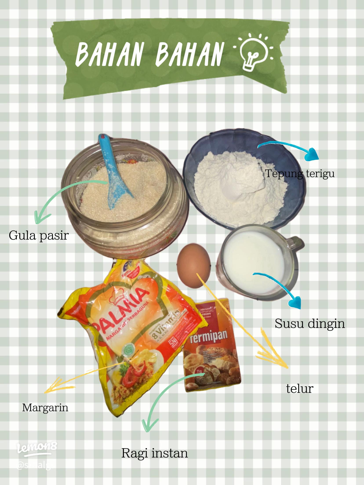
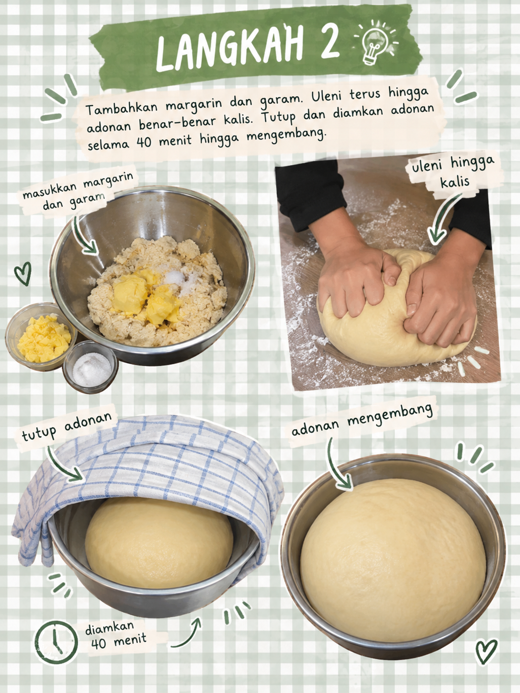
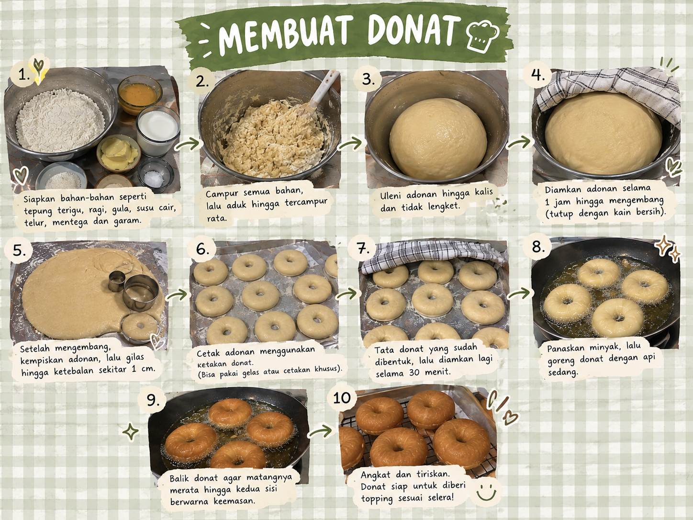

Resep Donat Kentang Empuk
Bahan-bahan:
- 250 gr tepung terigu protein tinggi
- 100 gr kentang kukus, haluskan
- 1 butir kuning telur
- 50 gr gula pasir
- 1 sdt ragi instan
- 100 ml susu cair dingin
- 30 gr margarin
- Sejumput garam
- Gula halus (gula donat) secukupnya
- Meses cokelat secukupnya
- Mentega untuk olesan meses
Bahan Topping:

Langkah-langkah
-
Campur tepung terigu, gula, ragi, dan kentang halus. Masukkan kuning telur dan susu cair sedikit demi sedikit sambil diuleni hingga adonan setengah kalis.

-
Tambahkan margarin dan garam. Uleni terus hingga adonan benar-benar kalis elastis. Tutup rapat dan diamkan adonan selama 40 menit hingga mengembang dua kali lipat.

-
Kempiskan adonan, bagi menjadi beberapa bagian, bentuk bulat-bulat, lalu lubangi tengahnya. Goreng dalam minyak panas api kecil. Angkat, dinginkan sebentar, lalu taburi gula halus atau olesi mentega dan taburi meses.
